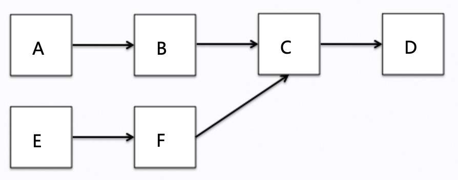

ff¶
1. 调度策略¶
调度系统调度策略分为classic策略和choreography策略。
classic策略是一个较为通用的调度策略，如果对当前车上dag结构不清楚，建议用此策略。
choreography策略是基于对车上任务足够熟悉，根据任务的依赖执行关系、任务的执行时长、任务cpu消耗情况、消息频率等，对任务进行编排。
2. classic策略¶
2.1 classic策略配置示例¶
cyber/conf/example_classic_sched.conf：
scheduler_conf {
policy: "classic"
process_level_cpuset: "0-7,16-23"
threads: [
{
name: "async_log"
cpuset: "1"
policy: "SCHED_OTHER"
prio: 0
}, {
name: "shm"
cpuset: "2"
policy: "SCHED_FIFO"
prio: 10
}
]
classic_conf {
groups: [
{
name: "group1"
processor_num: 16
affinity: "range"
cpuset: "0-7,16-23"
processor_policy: "SCHED_OTHER"
processor_prio: 0
tasks: [
{
name: "E"
prio: 0
}
]
},{
name: "group2"
processor_num: 16
affinity: "1to1"
cpuset: "8-15,24-31"
processor_policy: "SCHED_OTHER"
processor_prio: 0
tasks: [
{
name: "A"
prio: 0
},{
name: "B"
prio: 1
},{
name: "C"
prio: 2
},{
name: "D"
prio: 3
}
]
}
]
}
}
2.2 配置属性说明¶
每个配置属性的含义、影响：
groups：如2.1的配置示例，classic策略可以配置多个group，主要为了实现资源隔离、跨numa问题，比如一个进程产生的所有task在0-31号cpu上执行，内核的调度会将线程在0-31号cpu上切换，跨numa节点会给系统带来额外的开销，这里可以通过group将numa节点进行隔离，一个numa节点下的0-7,16-23号cpu划分到一个group中，另外一个numa节点下的8-15,24-31号cpu划分到另一个group，这样既保证了资源利用，也能避免跨numa节点带来的开销。
process_level_cpuset: 控制mainboard进程使用哪些cpu
affinity： 取值为range或者1to1，如第一个group，创建16个线程，在0-7,16-23号cpu上设置亲和性，每个线程都可以在0-7，16-23号核上执行。第二个group中，affinity为1to1，表示16个线程对应8-15,24-31号cpu，每个线程和一个cpu进行亲和性设置，能减少线程在cpu之间切换带来的开销，但是前提是开启的线程数和cpu数必须一致。
processor_policy和processor_prio: 这两个一般成对出现，processor_policy指设置线程的调度策略，取值为SCHED_FIFO（实时调度策略，先到先服务）, SCHED_RR（实时调度策略，时间片轮转）, SCHED_OTHER（分时调度策略，为默认策略），对于设置了SCHED_FIFO或者SCHED_RR的线程会更优先的得到cpu执行， 调度模型中设置processor_policy背景：为了保证主链路的任务或者其他一些实时task的优先执行。如果processor_policy设置为SCHED_FIFO/SCHED_RR，processor_prio取值为(1-99)，值越大，表明优先级越高，抢到cpu概率越大。如果processor_policy设置为SCHED_OTHER，processor_prio取值为（-20-19，0为默认值），这里为nice值，nice值不影响分配到cpu的优先级，但是影响分到cpu时间片的大小，如果nice值越小，分到的时间片越多。
tasks：这里是对task任务进行配置，name表示task的名字，prio表示任务的优先级，为了提高性能，减小任务队列锁的粒度，调度模型中采用的是多优先级队列，也就是同一优先级的task在同一个队列里面，系统调度时会优先执行优先级高的任务。
2.3 配置案例详解¶
例如拓扑结构为下图所示，对应2.1中的配置文件，那么A、B、C、D任务在第一个group中执行，E在第二个group中执行，对于没有出现在配置中的任务，比如F默认会放到第一个group中执行。 而且配置中我们对于任务进行了优先级设置，A、B、C、D优先级依次增大，正好对应下图的拓扑依赖关系，在链路中越靠后的任务优先级越高。这样设置的目的是解决任务优先级反转的问题。
3. choreography策略¶
3.1 choreography策略配置示例¶
cyber/conf/example_choreography_sched.conf:
scheduler_conf {
policy: "choreography"
process_level_cpuset: "0-7,16-23"
threads: [
{
name: "lidar"
cpuset: "1"
policy: "SCHED_RR"
prio: 10
}, {
name: "shm"
cpuset: "2"
policy: "SCHED_FIFO"
prio: 10
}
]
choreography_conf {
choreography_processor_num: 8
choreography_affinity: "range"
choreography_cpuset: "0-7"
choreography_processor_policy: "SCHED_FIFO"
choreography_processor_prio: 10
pool_processor_num: 8
pool_affinity: "range"
pool_cpuset: "16-23"
pool_processor_policy: "SCHED_OTHER"
pool_processor_prio: 0
tasks: [
{
name: "A"
processor: 0
prio: 1
},
{
name: "B"
processor: 0
prio: 2
},
{
name: "C"
processor: 1
prio: 1
},
{
name: "D"
processor: 1
prio: 2
},
{
name: "E"
}
]
}
}
3.2 配置属性说明¶
choreography策略，主要是对主链路上的任务进行编排（choreography开头的配置），将非主链路的任务放到线程池中由classic策略（pool开头的配置）执行，choreography策略中classic线程池存在的意义：主链路的任务执行先后关系比较明确，但是存在一些其他链路的任务在不清楚前后拓扑关系的情况下，或者说未被编排的任务（包括Async创建的异步task），会被放到classic线程池中执行。
关于配置属性：
affinity： 在2.2中进行了解释说明。
choreography_processor_policy和choreography_processor_prio是设置编排线程的调度策略和优先级，这里设置SCHED_FIFO是为了保证主链路能够及时抢占cpu执行， pool_processor_policy和pool_processor_prio是设置classic线程的调度策略和优先级。
3.3 配置案例详解¶
用2.3中的拓扑图来进行说明
A、B、C、D是主链路任务，都设置了processor属性，那么A、B在0号cpu上执行，C、D在1号cpu上执行。在同一个核上，A和B还设置了优先级，所以优先执行B，再执行A。
没有配置processor属性的任务E以及没有出现在task配置中的任务如F，则默认进入classic线程池中执行。
考虑到任务优先级、执行时长、频率与调度之间的关系，任务编排有如下几个依据：
同一个path的任务尽量编排在同一个processor，如果processor负载过高，将部分任务拆分到另外其他processor
同一个path上的任务从开始到结束，优先级逐级升高
不同path上的任务尽量不混排
高频&短耗时任务尽量排放同一processor
4. 默认配置说明¶
如果进程没有对应的调度配置文件，默认采用classic调度策略，开启调度任务线程数值为conf/cyber.pb.conf中default_proc_num设置的值
5. 进程加载调度配置文件示例¶
modules/dreamview/conf/hmi_modes/mkz_close_loop.pb.txt中，设置了两个process_group，分别为compute_sched/control_sched,也就是这两个进程启动时候，分别加载compute_sched.conf/control_sched.conf的调度配置文件。
另外要注意的是dreamview进程的process_group：dreamview_sched 是在modules/dreamview/backend/main.cc 中进行设置的，加载对应的调度配置文件dreamview_sched.conf。
6. 调度策略切换¶
默认调度策略采用classic策略，compute_sched.conf和control_sched.conf两个软链分别指向compute_sched_classic.conf和control_sched_classic.conf文件。可以通过将软链指向compute_sched_choreography.conf和control_sched_choreography.conf配置文件来切换到choreography策略。